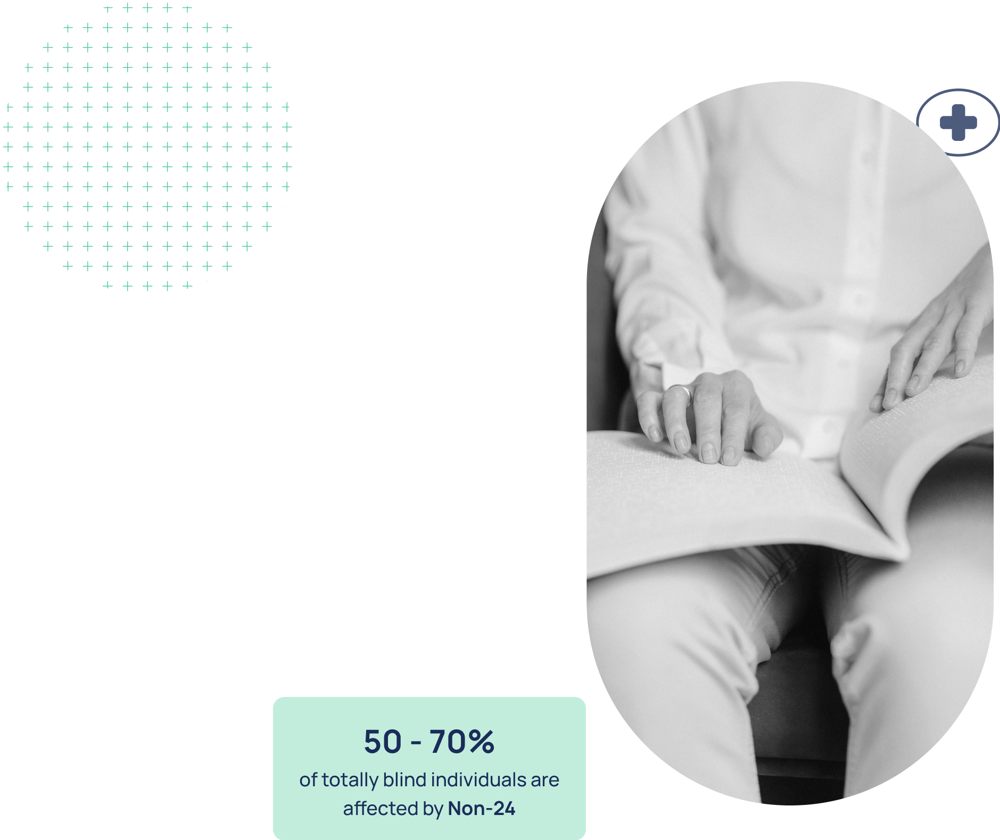

Why is Treatment Important?
Without treatment, Non-24 can lead to:
Chronic fatigue and excessive daytime sleepiness
Difficulty maintaining employment and relationships
Increased risk of mental health challenges such as anxiety and depression
Reduced overall quality of life due to an unpredictable sleep schedule
Think You Might Have Non-24? Get Screened Now
If you’re experiencing symptoms of Non-24, don’t wait to seek help. Early diagnosis and treatment can make a significant difference in your daily life.
Find Out If You Might Have Non-24
Our simple assessment will help determine whether you may have Non-24.
Answer a few quick questions about your sleep schedule, light perception and get immediate feedback on your next steps.